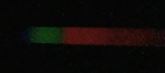

Spectrum Gallery
Here are some absorption spectra produced by the DIY Spectrometer. The spectrometer was calibrated using a fluorescent light source, with the peaks matched to the known fluorescent spectrum. All the follow spectra were then produced with an incandescent bulb as the light source.
Tap Water
Distilled Water
Salt (in tap water)

Sugar (in tap water)
Vodka

Rubbing Alcohol
Pomegranate Concentrate
Cranberry Concentrate
Cranberry Cocktail
Red Food Colour
Red Food Colour and Sugar
Red Ink
Green Food Colour
Green Ink
Blue Food Colour
Yellow Food Colour
